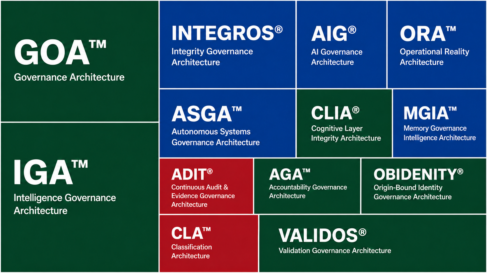

OOF® Reference Architectures

Official OOF® Architecture Library
This section contains the official OOF® reference architectures usedto identify, define, structure, classify, navigate, and govern
complex systems across artificial intelligence, autonomous agents,
robotics, Human-AI environments, organizations, institutions, and
future intelligence ecosystems.
OOF® reference architectures provide structured governance
frameworks designed to help identify governable spaces, establish
architectural boundaries, organize knowledge, support diagnostics,
improve interoperability, and create structured standards ecosystems
for complex operational environments. These architectures serve as
reference models for: AI Systems Autonomous Agents Multi-Agent
Systems Robotics Human-AI Environments Intelligent Infrastructure
Organizations Institutions Governance Systems Future Intelligence
Ecosystems Each architecture defines a specific governance domain
and provides a structured framework for identifying problems,
classifying operational spaces, organizing standards, supporting
governance decisions, and enabling systematic analysis. Reference
architectures may include: Architecture Index Complete Standards &
Modules Index Architecture Map Together, OOF® Reference
Architectures provide a structured foundation for identifying
governance spaces, developing structured standards, supporting
diagnostics, enabling architectural navigation, and building
governance-ready solutions for intelligent and autonomous systems.
The purpose of OOF® Reference Architectures is not to govern
specific technologies, vendors, or implementations. The purpose is
to provide structured architectural frameworks that help identify
where governance applies, where problems belong, and how complex
systems can be understood, organized, and governed through clearly
defined spaces and structured standards.